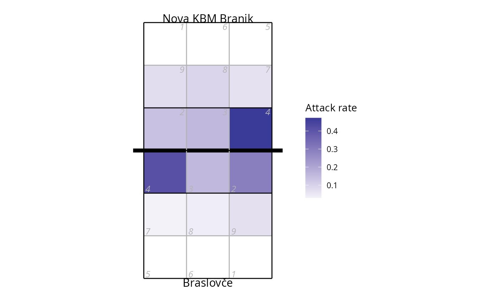
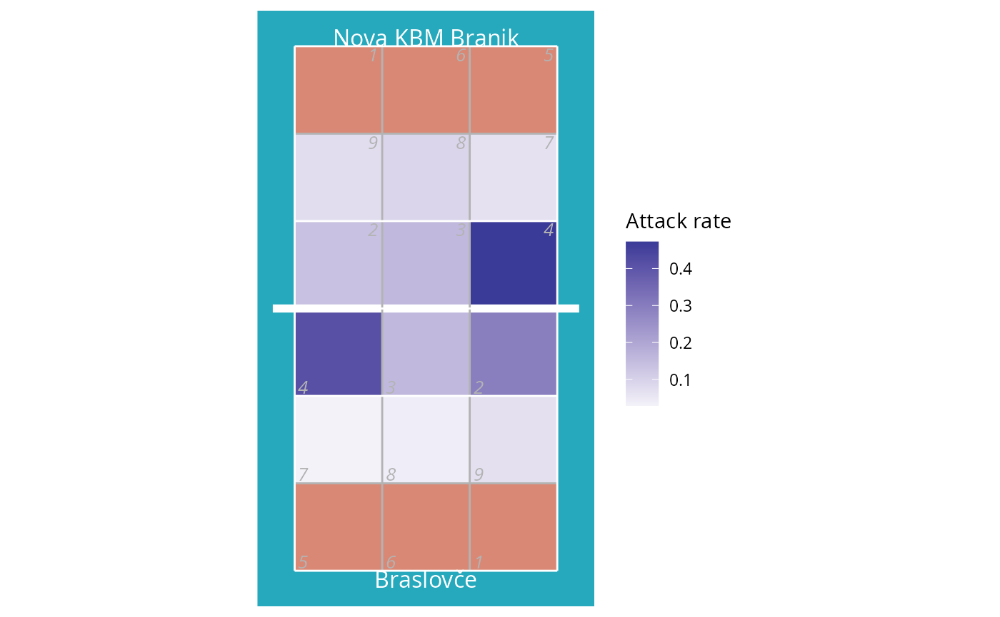
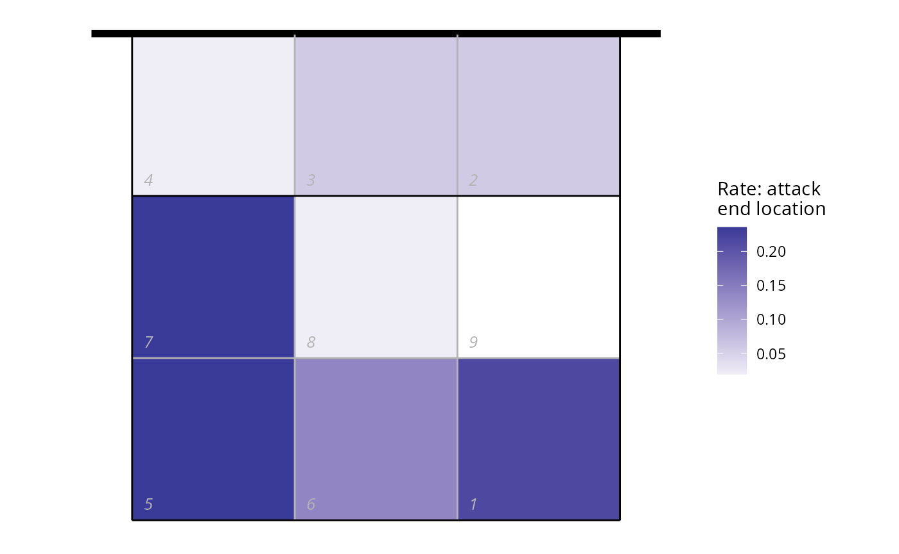
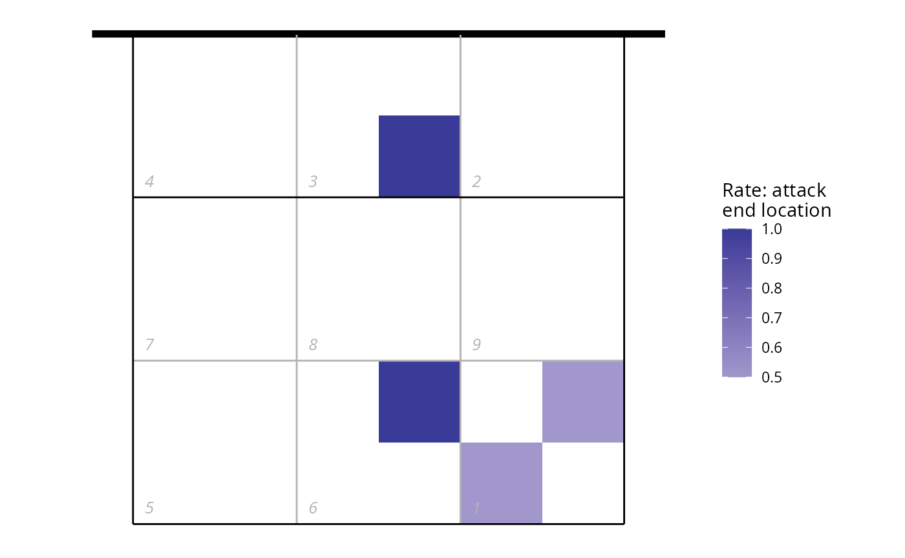
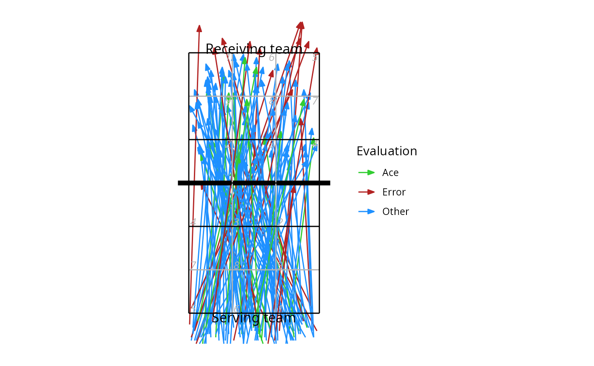
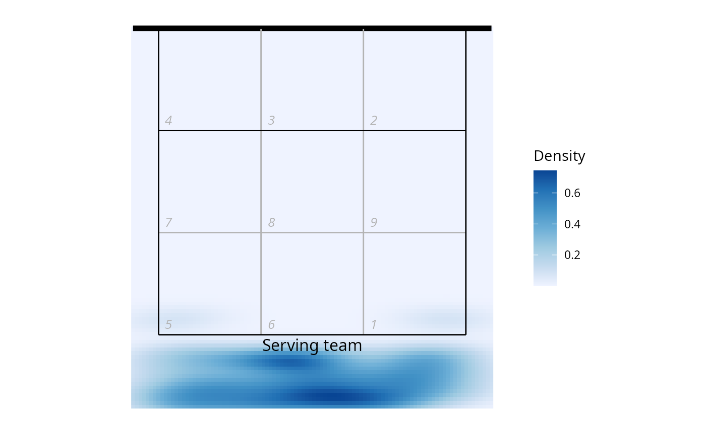

datavolley.RmdAn R package for reading volleyball scouting files in DataVolley format (*.dvw), collected for example with the commercial DataVolley, Click and Scout, or VolleyStation software.
See also:
The peranavolley package provides similar functionality for reading files scouted by the AOC VBStats software.
install.packages("datavolley", repos = "https://openvolley.r-universe.dev")
## or
## install.packages("remotes") ## if needed
remotes::install_github("openvolley/datavolley")Read one of the example data files bundled with the package:
library(datavolley)
x <- dv_read(dv_example_file(), insert_technical_timeouts = FALSE)
summary(x)
#> Match summary:
#> Date: 2015-01-25
#> League: Finale mladinke
#> Teams: Braslovče (JERONČIČ ZORAN/MIHALINEC DAMIJANA)
#> vs
#> Nova KBM Branik (HAFNER MATJAŽ)
#> Result: 3-0 (25-16, 25-14, 25-22)
#> Duration: 67 minutesNote that if you are working with files that were scouted by VolleyMetrics, they use some conventions in their files that differ from standard DataVolley usage. There is an option to tell dv_read to follow their conventions:
x <- dv_read("/your/file.dvw", skill_evaluation_decode = "volleymetrics")Number of serves by team:
serve_idx <- find_serves(plays(x))
table(plays(x)$team[serve_idx])
#>
#> Braslovče Nova KBM Branik
#> 74 54Distribution of serve run lengths:
serve_run_info <- find_runs(plays(x)[serve_idx, ])
table(unique(serve_run_info[, c("run_id", "run_length")])$run_length)
#>
#> 1 2 3 4 5 7 8
#> 34 16 7 4 1 1 1The court position associated with each action can be recorded in two ways. The most common is by zones (numbered 1-9).
Heatmap of attack rate by court zone (where the attack was made from):
library(ggplot2)
library(dplyr)
## calculate attack frequency by zone, per team
attack_rate <- plays(x) %>% dplyr::filter(skill == "Attack") %>%
group_by(team, start_zone) %>% dplyr::summarize(n_attacks = n()) %>%
mutate(rate = n_attacks/sum(n_attacks)) %>% ungroup
## add x, y coordinates associated with the zones
attack_rate <- cbind(attack_rate, dv_xy(attack_rate$start_zone, end = "lower"))
## for team 2, these need to be on the top half of the diagram
tm2i <- attack_rate$team == teams(x)[2]
attack_rate[tm2i, c("x", "y")] <- dv_flip_xy(attack_rate[tm2i, c("x", "y")])
ggplot(attack_rate, aes(x, y, fill = rate)) + geom_tile() + ggcourt(labels = teams(x)) +
scale_fill_gradient2(name = "Attack rate")
If you prefer a more colourful court, check the court_colour = "indoor" option. Note that we make two calls to ggcourt in this example, one with background_only = TRUE to plot just the court background colours, and again with foreground_only = TRUE to add the grid lines and labels. Making two calls allows us to control the layer order, so that the court colours are behind the heatmap, but the grid lines are on top of it:
ggplot(attack_rate, aes(x, y, fill = rate)) +
## plot just the background court colour
ggcourt(court_colour = "indoor", background_only = TRUE) +
## add the heatmap
geom_tile() +
## now add the grid lines and labels
ggcourt(labels = teams(x), court_colour = "indoor", foreground_only = TRUE) +
scale_fill_gradient2(name = "Attack rate")
Heatmap of where attacks ended, using only attacks by Nova KBM Branik from position 4:
## calculate attack frequency by zone, per team
attack_rate <- plays(x) %>%
dplyr::filter(team == "Nova KBM Branik" & skill == "Attack" & start_zone == 4) %>%
group_by(end_zone) %>% dplyr::summarize(n_attacks = n()) %>%
mutate(rate = n_attacks/sum(n_attacks)) %>% ungroup
attack_rate <- cbind(attack_rate, dv_xy(attack_rate$end_zone, end = "lower"))
ggplot(attack_rate, aes(x, y, fill = rate)) + geom_tile() + ggcourt("lower", labels = NULL) +
scale_fill_gradient2(name = "Rate: attack\nend location")
#> Warning: Removed 1 rows containing missing values (geom_tile).
We can also use the end subzone information, if it has been recorded. The subzones divide each zone into four, so we get higher spatial resolution (but the subzone is not always scouted). The same plot as above, but using subzones:
attack_rate <- plays(x) %>%
dplyr::filter(team != "Nova KBM Branik" & skill == "Attack" & start_zone == 4 & !is.na(end_subzone)) %>%
group_by(end_zone, end_subzone) %>% dplyr::summarize(n_attacks = n()) %>%
mutate(rate = n_attacks/sum(n_attacks)) %>% ungroup
#> `summarise()` has grouped output by 'end_zone'. You can override using the `.groups` argument.
attack_rate <- cbind(attack_rate, dv_xy(attack_rate$end_zone, end = "lower", subzones = attack_rate$end_subzone))
ggplot(attack_rate, aes(x, y, fill = rate)) + geom_tile() + ggcourt("lower", labels = NULL) +
scale_fill_gradient2(name = "Rate: attack\nend location")
Or using arrows to show the starting and ending zones of attacks:
## first tabulate attacks by starting and ending zone
attack_rate <- plays(x) %>% dplyr::filter(team == teams(x)[1] & skill == "Attack") %>%
group_by(start_zone, end_zone) %>% tally() %>% ungroup
## convert counts to rates
attack_rate$rate <- attack_rate$n/sum(attack_rate$n)
## discard zones with zero attacks or missing location information
attack_rate <- attack_rate %>% dplyr::filter(rate>0 & !is.na(start_zone) & !is.na(end_zone))
## add starting x, y coordinates
attack_rate <- cbind(attack_rate, dv_xy(attack_rate$start_zone, end = "lower", xynames = c("sx", "sy")))
## and ending x, y coordinates
attack_rate <- cbind(attack_rate, dv_xy(attack_rate$end_zone, end = "upper", xynames = c("ex", "ey")))
## plot in reverse order so largest arrows are on the bottom
attack_rate <- attack_rate %>% dplyr::arrange(desc(rate))
p <- ggplot(attack_rate, aes(x, y, col = rate)) + ggcourt(labels = c(teams(x)[1], ""), court_colour = "indoor")
for (n in 1:nrow(attack_rate))
p <- p + geom_path(data = data.frame(x = c(attack_rate$sx[n], attack_rate$ex[n]),
y = c(attack_rate$sy[n], attack_rate$ey[n]),
rate = attack_rate$rate[n]),
aes(size = rate), lineend = "round",
arrow = arrow(length = unit(2, "mm"), type = "closed", angle = 20, ends = "last"))
p + scale_colour_gradient(name = "Attack rate") + guides(size = "none")Another source of position data is court coordinates. These are not included in all data files, because generally they must be manually entered by the scout and this can be a time consuming process. For the purposes of demonstration, here we generate fake coordinate data:
## take just the serves from the play-by-play data
xserves <- subset(plays(x), skill == "Serve")
## if the file had been scouted with coordinate included, we could plot them directly
## this file has no coordinates, so we'll fake some up for demo purposes
coords <- dv_fake_coordinates("serve", xserves$evaluation)
xserves[, c("start_coordinate", "start_coordinate_x", "start_coordinate_y",
"end_coordinate", "end_coordinate_x", "end_coordinate_y")] <- coords
## now we can plot these
xserves$evaluation[!xserves$evaluation %in% c("Ace", "Error")] <- "Other"
ggplot(xserves, aes(start_coordinate_x, start_coordinate_y,
xend = end_coordinate_x, yend = end_coordinate_y, colour = evaluation)) +
geom_segment(arrow = arrow(length = unit(2, "mm"), type = "closed", angle = 20)) +
scale_colour_manual(values = c(Ace = "limegreen", Error = "firebrick", Other = "dodgerblue"),
name = "Evaluation") +
ggcourt(labels = c("Serving team", "Receiving team"))
We could also use these coordinates to generate a heatmap-style plot of serve location:
ggplot(xserves, aes(start_coordinate_x, start_coordinate_y)) +
stat_density_2d(geom = "raster", aes(fill = ..density..), contour = FALSE) +
scale_fill_distiller(palette = 1, direction = 1, name = "Density") +
ggcourt("lower", labels = "Serving team")
You might want to read multiple files in and analyze them all together. First find all of the DataVolley files in the target directory:
d <- dir("c:/data", pattern = "dvw$", full.names = TRUE)
## if your files are in nested directories, add 'recursive = TRUE' to the argumentsRead all of those files in a loop, extract the play-by-play component from each, and then join of those all together:
lx <- list()
## read each file
for (fi in seq_along(d)) lx[[fi]] <- dv_read(d[fi])
## now extract the play-by-play component from each and bind them together
px <- list()
for (fi in seq_along(lx)) px[[fi]] <- plays(lx[[fi]])
px <- do.call(rbind, px)(Note, the idiomatic R way to do this would be to use lapply instead of for loops:
It achieves the same thing. Use whichever you prefer.)
And then we could get dataset-wide statistics, for example reception error rate by team:
library(dplyr)
px %>% dplyr::filter(skill == "Reception") %>% group_by(team) %>%
dplyr::summarize(N_receptions = n(), error_rate = mean(evaluation == "Error", na.rm = TRUE))
#> # A tibble: 4 x 3
#> team N_receptions error_rate
#> <chr> <int> <dbl>
#> 1 ACH Volley 32 0.0312
#> 2 Braslovče 44 0.227
#> 3 Maribor 64 0.188
#> 4 Nova KBM Branik 66 0.121If you see unexpected behaviour, try dv_read(..., do_warn = TRUE, verbose = TRUE) to obtain more diagnostic information during the process of reading and parsing the DataVolley file. Also check the text encoding specified to dv_read (did you specify one??)